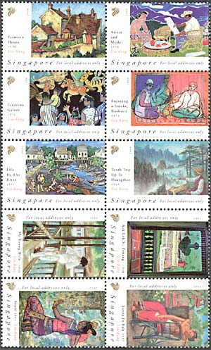
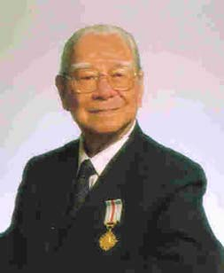
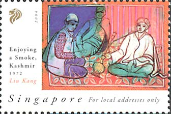
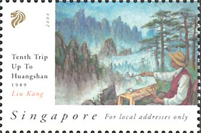
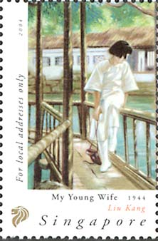
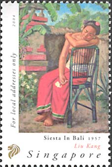
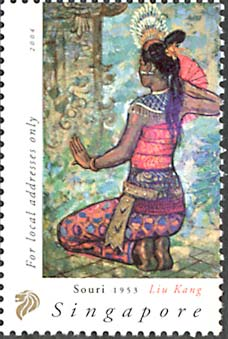

Liu Kang
It is a pleasure for the author of the Art On Stamps site to relate about a new series entitled "Art on Stamps". I speak about the new series that the Singapore Philatelic Bureau launched on the 18 February 2004, in the form of two se-tenant sheets, labeled "For Local Addresses Only". I have recently got this issue, directly form the Singapore Post, in the form of a presentation pack. Please see below its nicely designed front page. The beginning of the contemporary art in Singapore can be traced back to 1930s to a group of immigrant artists from China, often referred as the "Nanyang artists". The Nanyang Style of art was an integration of traditional Chinese ink and wash painting, and was influenced by the School of Paris and local subject matter. By synthesizing these three elements, the Nanyang artists were able to imbue a sense of local consciousness within their works. During the 1950s the Nanyang artists had extended their aesthetic explorations to Bali and since then Balinese indigenous art has become a major influence on the Nanyang Style. This was seen as an issue of regionalism in the early art history of Singapore. Nanyang Style became the mainstream in visual arts practice in Singapore until it was replaced by Abstract Expressionism and Pop art in the 1970s (source).

Born in Fujian Province, China, in 1911, LIU KANG came to Malaya as a child. He returned to China in 1927 and studied at several art academies. In 1928, he left for France to study at the Ecole Nationale Superieure des Beaux Arts, Paris. He returned to Shanghai in 1933 but with the outbreak of the Sino-Japanese War, Liu returned to Malaysia in 1937 and then to Singapore. A founding member of the Singapore Art Society, Liu felt that art should stem from the artist's environment. He was one of the Singapore Pioneer Artists credited with developing the Nanyang Style. Together with Chen Wen His, Cheong Soo Pieng and Chen Chong Swee, Liu went to Bali in 1952, a seminal event which inspired Singapore artists' attempts to secure a unique identity. Aside from being a prolific painter, Liu Kang also taught art at the Nanyang Academy of Fine Arts. As the teacher of many younger artists, Liu Kang continues to be a strong influence in much of Singapore art. Liu Kang is a founding member of the Singapore Art Society, and is credited with developing the Nanyang style. In 1970, the Singapore Government awarded Liu Kang the Public Service Star. (Source) Liu Kang died of natural causes at 2.59am in the Mount Elizabeth Hospital on Wednesday 1 June 2004. He was 93.
|
 |
 A self-portrait in his younger days |
The first of two sheets, shown above, presents the works of Liu Kang, who was one of the pioneers of art in Singapore. His numerous paintings were done in both oils and pastels. Liu Kang's versatility as an artist is evident in his work done over the years which cover an impressive range of subject and genres.
|
 |
 |
For local addresses only. Liu Kang: Enjoying a Smoke, Kashmir, 1972; Tenth Trip Up To Huangshan, 1989.
|
 |
 |
 |
For local addresses only. Liu Kang: My Young Wife, 1944; Siesta in Bali, 1957; Souri, 1953.
Links:
| Published:
08/29/2004. Revised:
12/31/05. Copyright © 2004 - 2006 by Victor Manta, Switzerland. All rights reserved worldwide. |
|